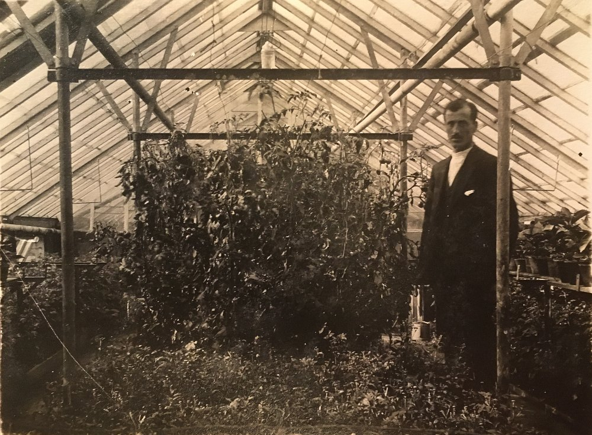

Gartneri med en lang historie
Spiren Gartneri holder til i den idylliske sommerbyen Drøbak, rett utenfor Oslo. I flere tiår har den samme familien holdt liv i det lokale gartneriet som får byen til å blomstre og smile.
Selv om vi driver lokalt på Østlandet, har vi med årene utvidet vårt tilbud slik at varene kan sendes til alle kriker og kroker av landet.

I min oppvekst lærte jeg at blomster gir farger til livet, og fungerer som lyspunkter på en tung dag. Å kunne bidra til at flere får kunnskap, men også beriker hverdagen sin med en fargefull hage eller en blomsterkvast på bordet, gjør meg uendelig taknemmelig og lykkelig.
– Eileen Eik, daglig leder og 3. generasjon